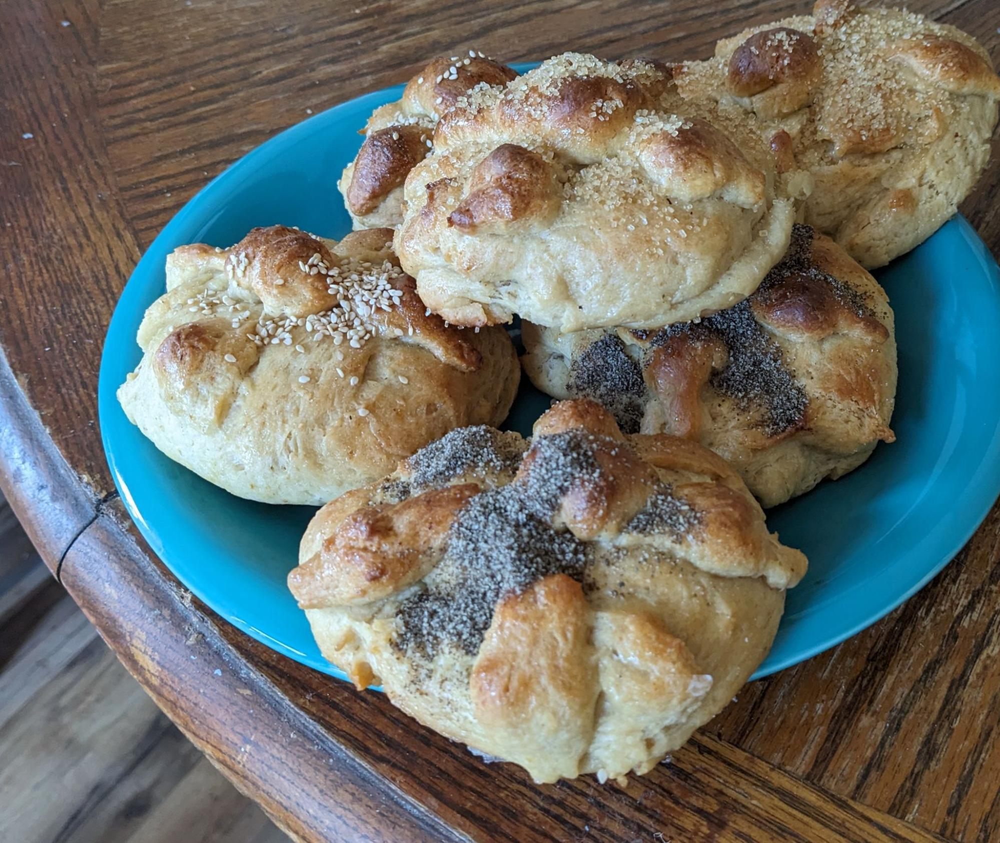

Pan de Muerto is a type of traditional pan dulce in Mexico. There are many different types of pan dulce in Mexico, with some of them being unique to local regions. Pan de Muerto, in contrast, is made throughout Mexico as well as by Mexican Americans in the United States. It is a traditional ofrenda offering on the Day of the Dead, where food is put out for deceased relatives, but it's also popular with the living.
I was enamored with this practice when I lived in the Southwest. However, I avoid eating animal products as much as possible, while the traditional version is made with lard and milk. I decided to make a vegan instead. If you search for "vegan recipes", you will find recipes wth all natural ingredients like flax seeds. These recipes are at least somewhat healthier and appeal to vegan aesthetics, but create the impression that the vegan version is never as good as the real thing. After weeks of experimentation, I was able to create a version that even meat eating Mexicans will accept as real Pan de Muerto.
The oil is ideally the texture of softened butter or margarine when you mix it in. If you use a liquid oil, it will still work and be tasty, but the texture will be less flaky.
Options include vegetable shortening, coconut oil at 76 °F or below, or extra virgin olive oil hardened in the freezer. What matters is the texture of the oil when you mix it in - if it's too hard or soft then it won't work. Vegetable shortening is neutral tasting and the easiest to work with, olive oil is the healthiest and my favorite tasting, while virgin coconut oil seemed to have the most mass appeal despite the non-traditional tastes.
You can also use margarine, but you must pick one that has at least 11g of fat per tablespoon and has no dairy added. Expect to use a different amount of soy milk than with oil.
Why no Margarine? Most traditional recipes will include margarine. However, most margarine is non-vegan (eg Land of the Lakes Margarine Sticks), has too low oil content (eg Country Crock, Imperial), or is expensive (Earth Balance Soy Free Buttery Spread). Coconut oil also compliments the taste of the bread well, which is otherwise a bit bland due to the all purpose flour.
Can I use whole wheat flour? I prefer whole wheat flour myself, but it can be polarizing. The best to use is called "Whole Grain Soft White Wheat," which is sometimes called Whole Wheat Pastry Flour. You will need more liquid and/or oil.
Can I use splenda instead of sugar? You can, but it will change the bread. Splenda adds less bulk, so the volume of liquid needed will be lower. With no sugar, the browning of the bread is drastically decreased. Expect to use a longer baking time or higher temperature. Coating with oil instead of aquafaba before adding the bones can aid in browning, but you must add aquafaba for the final 5 minutes of baking.
1. Receta de Pan de muerto tradicional, Ana Victoria Vázquez
(https://www.recetasgratis.net/receta-de-pan-de-muerto-tradicional-23903.html)
2. LA MEJOR RECETA DE PAN DE MUERTO, Michelle Chavez
(https://thesweetmolcajete.com/la-mejor-receta-de-pan-de-muerto/)
3. Pan de Muertos (Mexican Bread of the Dead), Lorna
(https://www.allrecipes.com/recipe/7224/pan-de-muertos-mexican-bread-of-the-dead/)